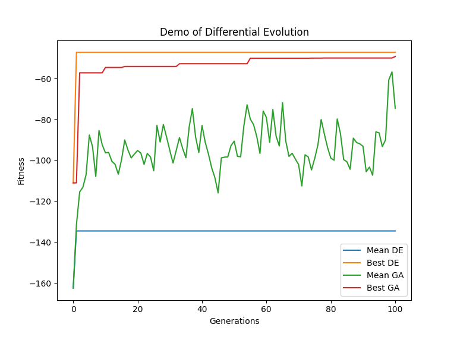

Customization¶
In this section, we present more complicated examples.
Simulated Annealing Algorithm¶
See the following code for SA Algorithm. The standard SA is an iteration of one solution. Hence we inherit it from FitnessModel instead of PopulationModel
#!/usr/bin/env python3
class SimulatedAnnealing(FitnessModel):
"""Class for Simulated Annealing
Attributes:
params (dict): parameters in SA
phantom: phantom solution for exploration
"""
phantom = None
params = {'ext_c': 0.995,
'int_c': 0.996,
'nepoch': 200,
'initT': 100, # initial temperature
'termT': 0.0001 # terminal temperature
}
def init(self):
self.phantom = self.clone(fitness=None)
def transit(self, *args, **kwargs):
T = self.initT
for epoch in range(self.nepoch):
self.phantom.move(T)
T *= self.int_c
if T < self.termT:
break
if self.fitness < self.phantom.fitness:
self.chromosomes = self.phantom.chromosomes
self.fitness = self.phantom.fitness
def postprocess(self):
self.initT *= self.ext_c
def move(self, T):
"""Transition of states
Arguments:
T {number} -- temperature
"""
cpy = self.get_neighbour()
# Metropolis rule
flag = metropolis_rule(D=cpy.fitness - self.fitness, T=T)
if flag:
self.chromosomes = cpy.chromosomes
self.fitness = cpy.fitness
Differential Evolution¶
The standard DE is a global searching algorithm. The class DifferentialEvolution for DE is inherited from PopulationModel.
class DifferentialEvolution(PopulationModel):
params ={
"factor" : 0.25,
"cross_prob": 0.75,
}
test_individuals = []
def init(self):
self.dimension = len(self.individuals[0][0])
self.test = self.clone()
def transit(self, *args, **kwargs):
self.move()
for k, (test_individual, individual) in enumerate(zip(self.test, self)):
if test_individual.fitness > individual.fitness:
self.individuals[k] = test_individual
def move(self):
for t in self.test:
x0, x1, x2 = choice(self.individuals, size=3, replace=False)
jrand = np.random.randint(0, self.dimension)
xx = x0.chromosome + self.factor * (x1.chromosome - x2.chromosome)
for j in range(self.dimension):
if random()<self.cross_prob or j == jrand:
t.chromosomes[0][j] = xx[j]
After running comparison-de.py, we get the following fitness curves.
